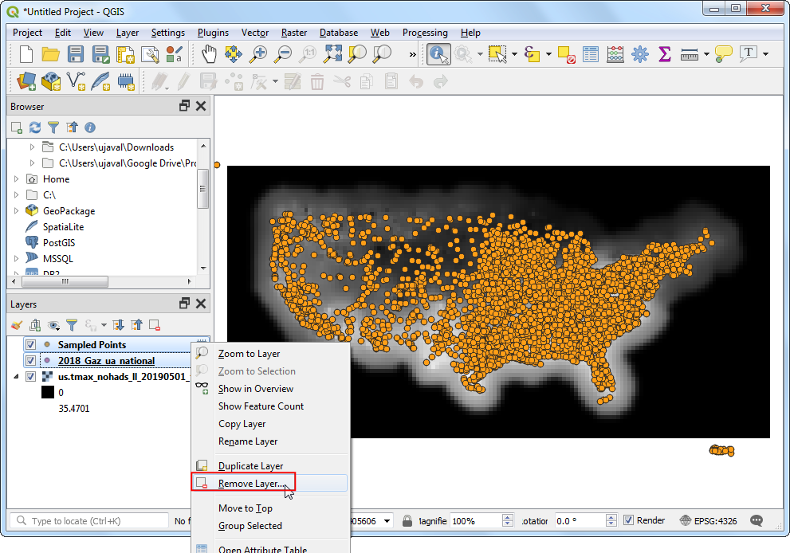

Ujaval Gandhi
Ujaval GandhiStichproben aus Rasterdaten mit Hilfe von Punkten und Polygonen (QGIS3)¶
Viele wissenschaftliche Daten oder Umweltdaten liegen als Rasterdaten vor. Digitale Geländemodelle (DGM oder DEM) werden ebenso als Rasterdaten angeboten. In diesen Rastendaten ist der thematische Parameter im Pixelwert einer Rasterzelle hinterlegt. Oftmals benötigt man diesen Pixelwert für einen bestimmten Ort oder auch eine Aggreation der Pixelwerte für ein bestimmtes Gebiet. Diese Funktionalität ist in den Verarbeitungswerkzeugen von QGIS enthalten. Die Algorithmen heißen Rasterwerte abtasten für Punktlayer und Zonenstatistik für Polygonlayer.
Überblick über die Aufgabe¶
Mit einem gegebenen Rasterdatensatz der maximalen Temperatur der Kontinetalfläche der USA wollen wir die Temperatur für Punkte der Ballungsgebiete extrahieren. Außerdem wollen wir für die Fläche der Verwaltungsbezirke die mittlere Temperatur bestimmen.
Weitere Fähigkeiten, die wir erlernen¶
Selektion und Entfernen mehrerer Layer aus dem QGIS Inhaltsverzeichnis.
Beschaffung der Daten¶
Das Climate Prediction Center der NOAA stellt GIS-Daten zu Temperatur und Niederschlag in den USA bereit: GIS data. Die aktuellen Daten können unter folgendem link heruntergeladen werden: latest grid file for maximum temperatures. Die Datei wird den folgenden Namen erhalten: us.tmax_nohads_ll_{YYYYMMDD}_float.tif
Wir werden folgende CSV Datei mit den Ballungsräumen der USA verwenden: 2018 US Gazetteer. Das Ortsverzeichnis laden wir unter:Urban Areas Gazetteer File herunter.
US Census Bureau provides TIGER/Line Shapefiles. You can visit the FTP site and download Census Tracts Shapefile.
Der Einfachheit halber können wir eine Kopie der Datensätze unter folgenden links herunterladen:
us.tmax_nohads_ll_20190501_float.tif
Datenquellen: [NOAACPC], [USGAZETTEER] [TIGER]
Arbeitsablauf¶
Wir entpacken die Dateien
2018_Gaz_ua_national.zipundtl_2018_us_county.zipin ein lokales Verzeichnis. Öffne QGIS, gehe im QGIS Browser zur Dateius.tmax_nohads_ll_20190501_float.tifund ziehe sie in den Arbeitsbereich.

Wir sehen den neu geladenen Rasterlayer
us.tmax_nohads_ll_20190501_floatim Layer Bereich. Die Rasterdatei enthält die maximal erfasste Temperatur für jedes Pixel. Als nächstes laden wir die Punktdatei der Ballungsräume hinzu. Das Format der Datei ist Text mit dem Trennzeichen Tabulator (TSV). Klicke auf den Knopf Datenquellenverwaltung öffnen in der Datenquellenverwaltungsleiste.

Wir gehen zum Abschnitt Getrennte Texte. Hier klicken wir auf den Knopf … neben Dateiname und geben den Pfad zu der heruntergeladenen Textdatei an. Im Bereich Dateiformat wählen wir Benutzerdefiniert und Tabulator. Als X-Feld wählen wir
INTPTLONGund als Y-FeldINTPTLAT. Klicke auf Hinzufügen und danach auf Schließen.

Der neue Punktlayer
2018_Gaz_ua_nationalwird nun im Layer Bereich angezeigt. Wir können jetzt die Werte unter den Punkten aus dem Rasterlayer extrahieren. Gehe zu .

Suche den Algorithmus und klicke doppelt darauf, um ihn zu starten.

Wir wählen
2018_Gaz_ua_nationalals Eingabepunktlayer undus.tmax_nohads_ll_20190501_floatals Raster Layer to sample. Wir erweitern den Bereich Fortgeschrittene Parameter und gebentmaxals Ausgabespaltenpräfix an. Klicke auf Starte und nach Beendigung der Prozessierung auf Schließen.

Ein neuer Layer
Abgetastete Punktewird nun im Layer Bereich angezeigt. Wähle das Tool Objekte abfragen aus der Attributwerkzeugleiste und klicke auf einen beliebigen Punkt. Die Attribute des Punktes werden im Fenster Abfrageergebnisse angezeigt. Wir sehen ein neues Attribut tmax_1, das zu jedem Feature hinzugefügt wurde. Dabei handelt es sich um den Wert des Pixels des Rasterlayers unter dem Punkt. Die 1 steht für die Nummer des Bandes des Rasterlayers. Wenn der Rasterlayer mehrere Bänder enthalten würde, würden entsprechend viele neue Attribute im Ausgabelayer erzeugt werden.

Der erste Teil unserer Analyse ist abgeschlossen. Wir können die nicht mehr benötigten Layer entfernen. Halte die Taste Shift gedrückt und wähle die Layer
Abgetastete Punkteund2018_Gaz_ua_national. Klicke mit der rechten Maustaste auf die Layer und wähle Layer löschen, um die Layer aus QGIS zu entfernen. Bei der Nachfrage 2 Layer entfernen? wählen wir OK.

Wir werden jetzt den Layer der Verwaltungsbezirke zur Abstastung der Rasterdaten verwenden und für jeden Bezirk einen Mittelwert der Temperatur bestimmen. Wir gehen im QGIS Browser zur Datei
tl_2018_us_county.shpund ziehen sie in den Arbeitsbereich.

Der Layer
tl_2018_us_countywird nun im Layer Bereich angezeigt. Wir gehen zu .

Wir suchen den Algorithmus und klicken doppelt darauf, um ihn zu starten.

Wähle
us.tmax_nohads_ll_20190501_floatals Rasterlayer undtl_2018_us_countyals Zonenvektorlayer. Gebetmax_als Ausgabespaltenpräfix vor. Klicke auf … neben Zu berechnende Statistik.

Wir wählen nur
Mittelund klicken auf OK.

Now, click on the … next to Zonal Statistics and select Save to File option to save the output.

Browse to the folder where you want to save the output. Save the output layer as
us_county_tmax.shp. Click Run to start the processing. The algorithm may take a few minutes to complete and you will see the output layer added as soon as the processing finishes. Click Close.

Right-click the
us_county_tmaxlayer, and select Open Attribute Table.

You will see a new column called
tmax_meanadded in the attribute table. This contains the average temperature value extracted over the polygon for each feature. There are some null values because those counties (belonging to Alaska, Hawaii and Puerto Rico) are outside of the raster layer’s extent.

If you want to give feedback or share your experience with this tutorial, please comment below. (requires GitHub account)